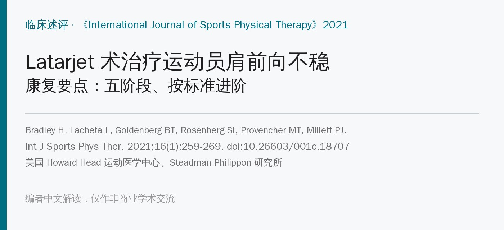
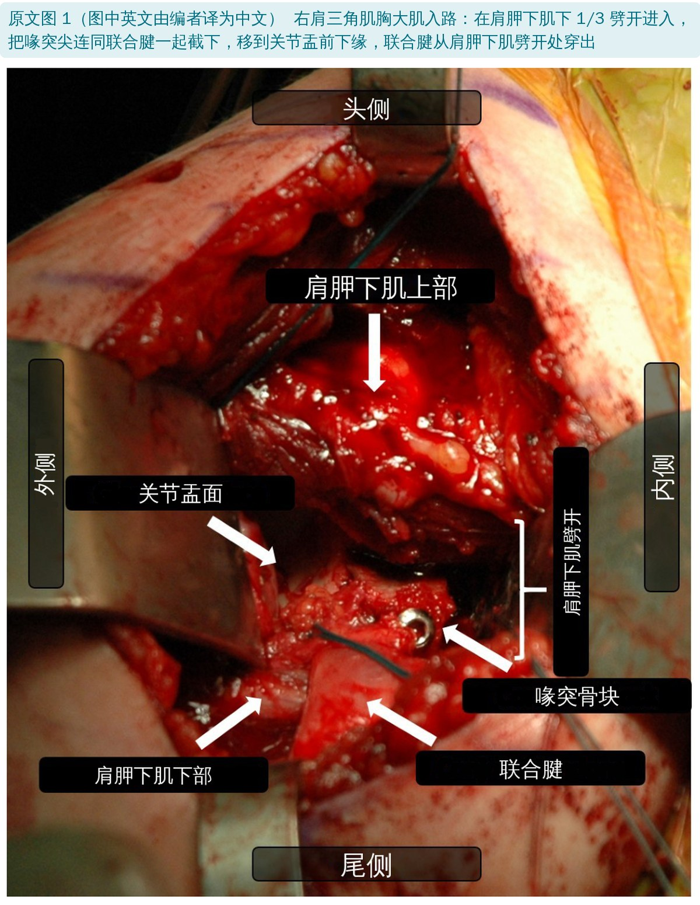
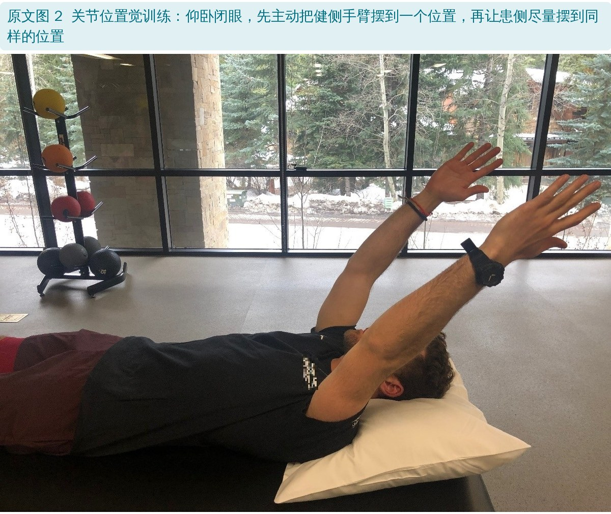
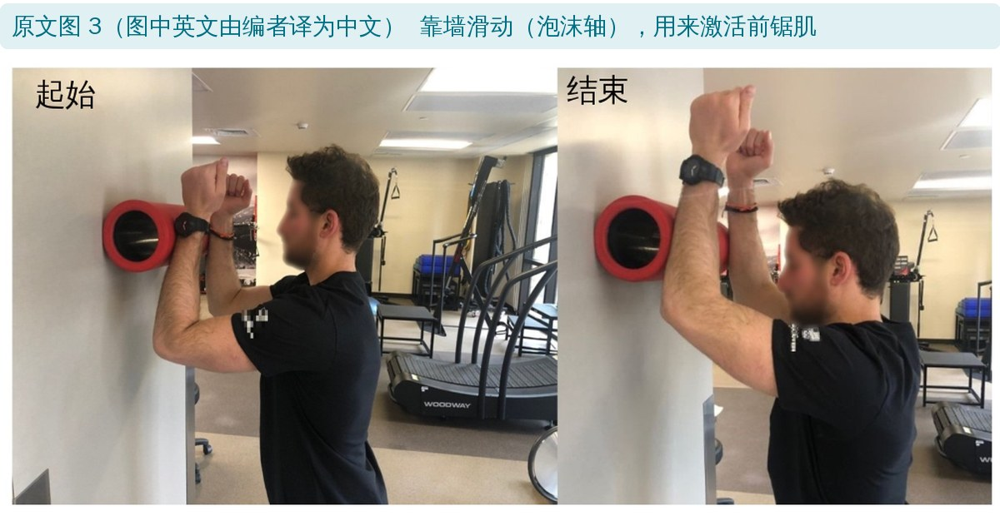
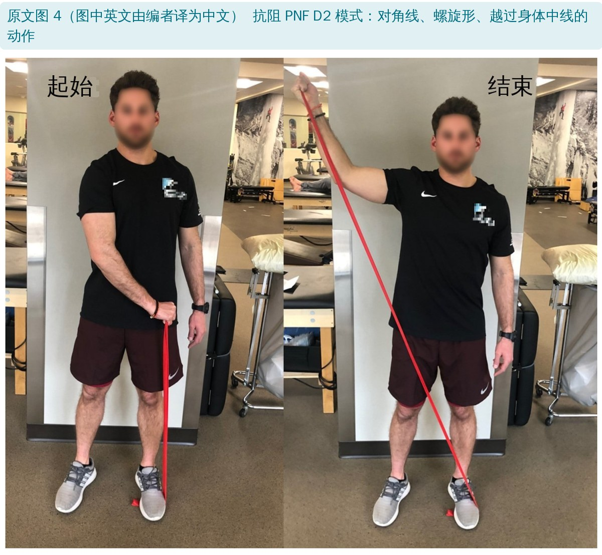
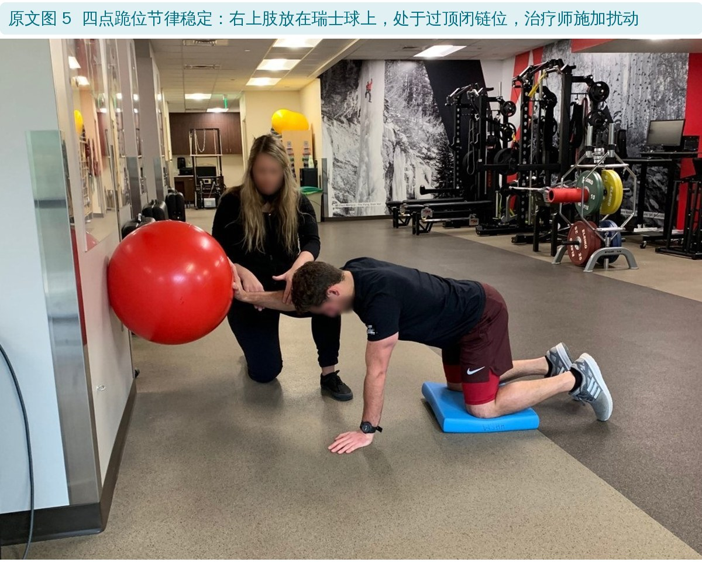
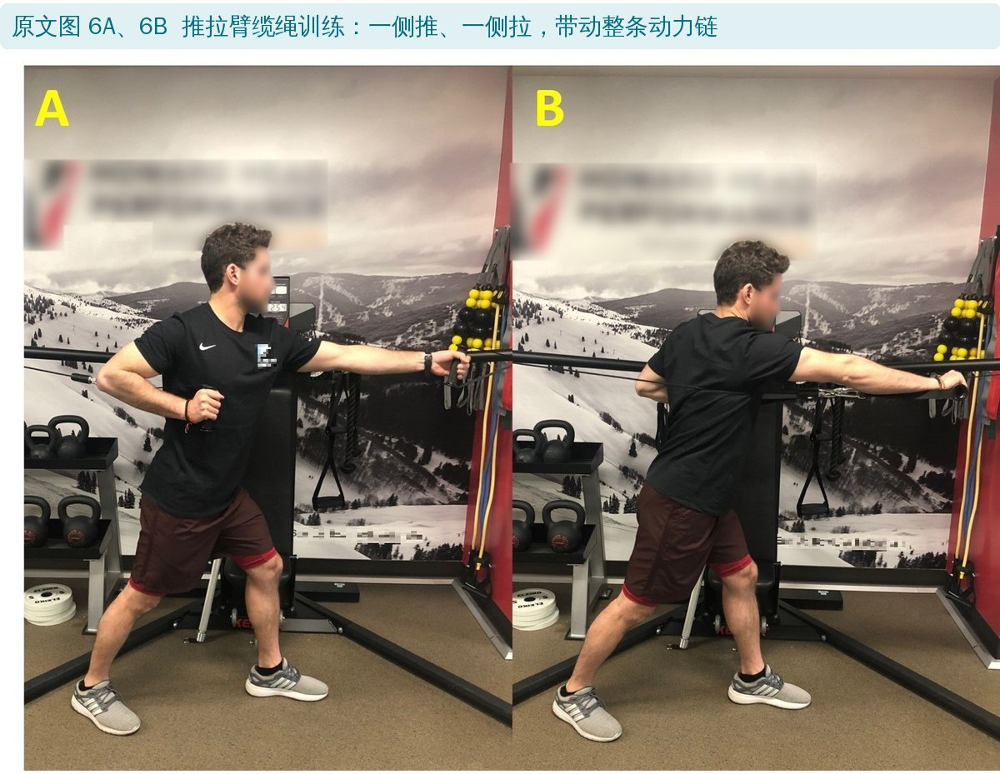
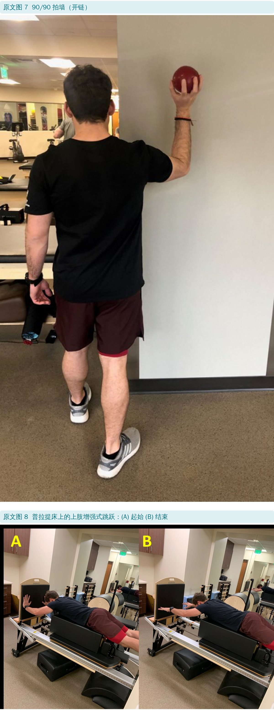
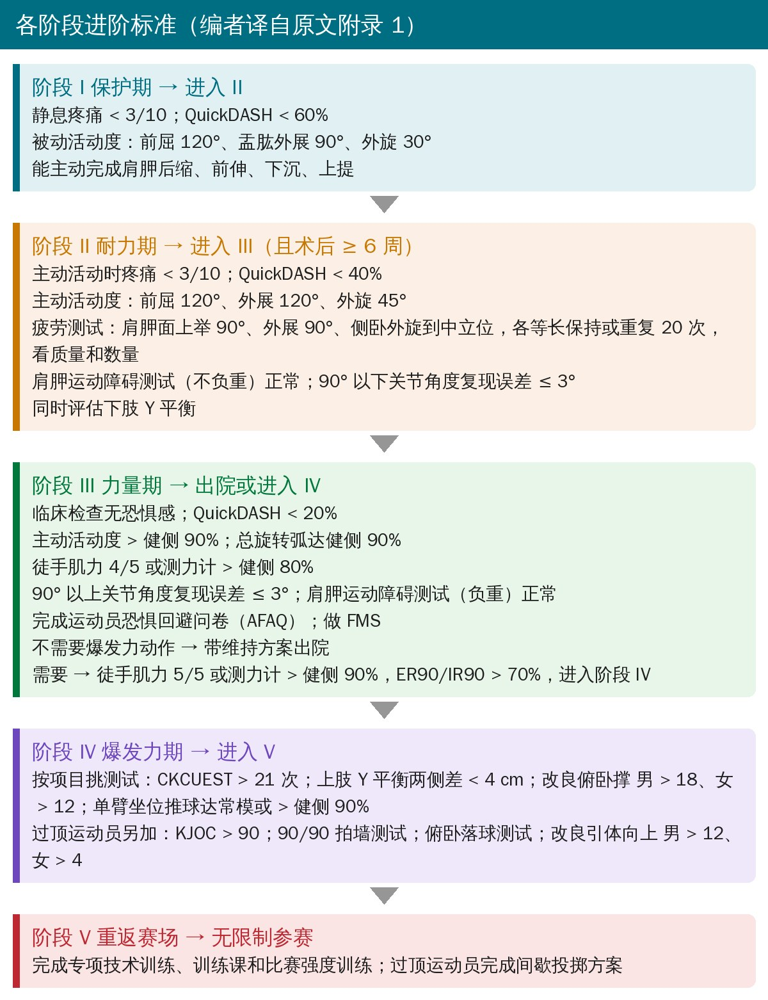
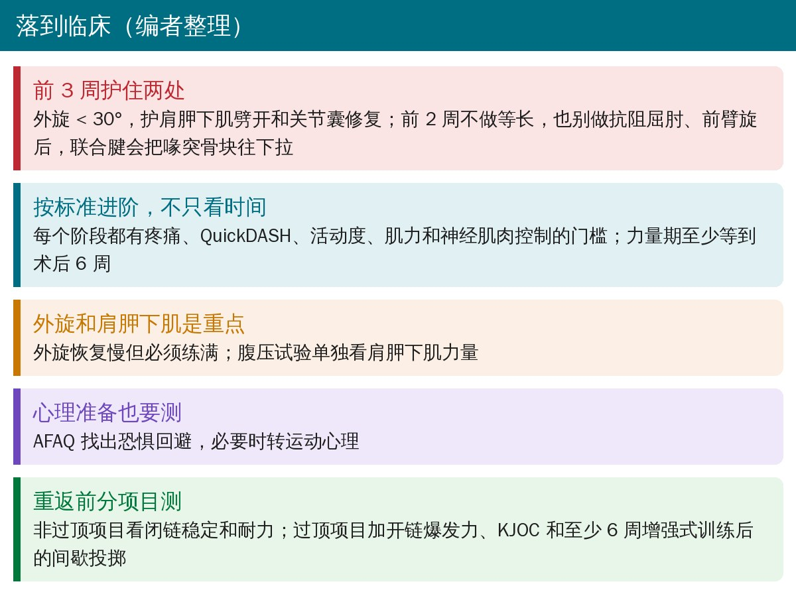

🔖原文信息（编者中文重排）
📚 文献信息
▪ Bradley H, Lacheta L, Goldenberg BT, Rosenberg SI, Provencher MT, Millett PJ. Latarjet Procedure for the Treatment of Anterior Glenohumeral Instability in the Athlete – Key Considerations for Rehabilitation. Int J Sports Phys Ther. 2021;16(1):259-269. doi:10.26603/001c.18707
▪ 中文题目：Latarjet 术治疗运动员肩前向不稳：康复要点
▪ 作者单位：美国 Howard Head 运动医学中心、Steadman Philippon 研究所、Steadman 诊所；德国柏林夏里特医学院
▪ 文章类型：临床述评，证据等级 5 级（专家意见）。进阶标准在原文附录 1 的流程图里
盂肱关节是全身最容易脱位的关节，九成以上是前脱位，年轻男性运动员最多见，橄榄球、冰球、摔跤这类对抗项目，以及滑雪、排球、体操这类容易摔倒的项目风险最高。
关节盂前方骨缺损达到 13.5% 以上时，单做软组织修复效果差，需要补骨。Latarjet 术就是把喙突连同附着的联合腱一起移到关节盂前下缘。术后稳定率和重返运动率都很高，但解剖改变大，术后活动度容易受限，而活动度受限又和远期骨关节炎有关。
问题在于：Latarjet 术后怎么练、什么时候可以进阶，一直没有统一、客观的标准。这篇述评给了一套五阶段、按标准进阶的方案：每个阶段都列出达标条件，达标再往下走，而不是单纯按术后天数推进。
| 效应 | 怎么起作用 |
|---|---|
| 吊带效应 | 联合腱在上臂外展外旋时，从下方兜住肩胛下肌下部和前下关节囊 |
| 骨块效应 | 关节盂前缘补了一块骨，前后径变大 |
| 关节囊效应 | 用喙肩韧带的一段加固下方关节囊 |
尸体研究（Yamamoto 2013）：在外展外旋的末端位置，吊带效应贡献 76%～77% 的稳定性，关节囊修复 23%～24%；在中间位置，吊带效应 51%～62%，骨块 38%～49%。也就是说，联合腱的吊带作用是主力，三者合在一起才稳。
标准三角肌胸大肌入路：把胸小肌和喙肩韧带从喙突上切下，用摆锯截下约 25 mm 长的喙突，保留联合腱；顺着纤维方向劈开肩胛下肌（在下 1/3 与中 1/3 交界处）和关节囊，关节盂前颈打磨出血后，用两枚 3.5 mm 螺钉把喙突骨块固定上去。

从这里能直接推出早期的两条禁忌：
• 肩胛下肌被劈开、关节囊被修复 → 早期限制外旋
• 联合腱（肱二头肌短头 + 喙肱肌）还连在喙突骨块上 → 早期不要抗阻屈肘、前臂旋后，否则会把骨块从关节盂上拉开
Latarjet 术后康复五阶段（编者根据原文整理）
| 阶段 | 时间 | 目标 | 主要内容 |
|---|---|---|---|
| I 保护期 | 术后 | 保护重建、控制肿胀、恢复被动活动 | 外展吊带 4 周；前 3 周外旋 < 30°；被动活动；肩胛主动训练；2 周后开始次大等长 |
| II 耐力期 | 达标 | 主动活动、肌耐力、神经肌肉控制 | 助力 → 主动活动；15～25 次 × 2～3 组；关节位置觉、PNF、肩胛控制 |
| III 力量期 | ≥ 6 周 | 力量、神经肌肉控制 | 8～12RM × 3～6 组；功能性和闭链训练；动力链；心理评估 |
| IV 爆发力期 | 按需 | 爆发力 | 80%～100% 1RM × 3～6 次 × 3～6 组；上肢增强式训练 |
| V 重返赛场 | 达标 | 回到比赛 | 专项训练；过顶项目做间歇投掷 |
只有阶段 III 给了最早时间（术后 6 周），其余阶段都以达标为准。不需要爆发力、对抗或过顶动作的人，阶段 III 达标就可以带维持方案出院
• 患者教育：讲清楚为什么要保护，依从性才有保证
• 外展吊带固定 4 周
• 早期被动活动防僵硬：前 3 周外旋限制在 30° 以内，其他方向不限，尽早练到全范围
• 手法：胸肌等肩周肌群的肌筋膜技术、瘢痕松动；冷疗等理疗消肿止痛、助眠
• 肩胛主动训练（前伸、后缩、上提、下沉，如“肩胛时钟”），手、腕、肘、颈的主动活动
• 术后 0～2 周不做任何等长收缩，尤其不要在屈肘、旋后时负重
• 2 周后：中立旋转位的次大强度、无痛等长；中立位节律稳定（治疗师在前臂近端给轻微振荡扰动，患者保持不动）
• 先助力后主动：主动活动从仰卧、侧卧、俯卧（减重力）开始，耐力好了再站着练
• 练耐力的参数：15～25 次 × 2～3 组，负荷 < 65% 1RM，组间休息 ≤ 30 秒，练到局部疲劳
• 外旋恢复慢，但一定要练满：任何活动度欠缺都可能影响远期关节健康、诱发骨关节炎
• 活动度恢复慢的，术后 5～6 周可以开始轻柔的盂肱关节松动；配合软组织松动和长时间牵伸
肩不稳患者的关节位置觉本来就差，开放修复术后要到 12 个月左右才恢复到和健侧一样。练法：闭眼，先把健侧摆到一个位置，再让患侧去对齐（图 2）。

• 关节角度复现测试（JART）：治疗师把患肢被动摆到某个角度，停留感受后放回中立位，患者主动复现，用量角器或倾角仪量误差。健康人平均误差约 2.7°。矢状面、冠状面、水平面都可以练
• PNF（如 D2 屈 / 伸）：在功能模式中练稳定和控制
• 节律稳定往末端走，尤其针对内外旋肌，促进肩袖前后部共同收缩
• 肩胛控制：斜方肌和前锯肌协同发力时肩胛最稳。俯卧 90° 水平外展加外旋、俯卧后伸、俯卧 125° 上举对肩胛周围肌群效果好；动态拥抱和靠墙滑动（图 3）前锯肌激活好

进入阶段 III 前，用 90° 以下的 JART、肩胛运动障碍测试（McClure 法）和主动活动疲劳测试评估，不能有代偿动作；同时做一次下肢 Y 平衡，找出下肢的不对称。
至少术后 6 周、阶段 II 达标才能进入，进阶参数要和整个治疗团队沟通。这时要把运动员的专项需求过一遍：过顶项目要把力量练到需要的活动范围，并开始模拟专项动作。
• 负荷：8～12RM × 3～6 组；徒手阻力、哑铃、药球、壶铃、弹力带都可以
• 先分肌群练（外旋肌、内旋肌），有了基础力量再练日常和专项的功能动作
• 对角线和动力链模式：抗阻 PNF（图 4）、Crossover Symmetry 等，肩胛肌激活最大

• 动态稳定：反应性神经肌肉训练和闭链训练；节律稳定可以融入全范围的任何动作；手下垫瑞士球等不稳定面、加扰动
• 闭链进阶：墙 → 桌面 → 四点跪位（图 5），负荷逐步加大，对肩胛控制很好
• “混沌”训练：杠铃两端用弹力带挂重物做过顶推举，增加不稳定和不可预测性
• 动力链：近端稳定才能远端灵活、发力和精准。单腿蹲、分腿蹲、半跪、高跪位下加远端阻力，整合同侧和对侧的动力链

• 临床检查无恐惧感
• 总旋转弧（外旋 + 内旋）：过顶运动员优势侧外旋多、内旋少很正常，但两侧总弧应相同，约 180°
• 力量：0° 外展位外旋、内旋，90° 外展、肩胛面上举和腹压试验，肢体对称指数（LSI）≥ 80%。腹压试验单独评估肩胛下肌，正好反映术中劈开的这块肌肉恢复得怎样
• 肩胛运动障碍测试异常的，用手持测力计测肩胛周围肌力
• 心理准备：用运动员恐惧回避问卷（AFAQ）筛查，有问题尽早转运动心理，否则可能成为后面最大的拖延因素
不需要爆发力、对抗或过顶动作的人，到这里可以带维持方案出院。需要的人，力量要达到健侧 90% 以上，并测 90° 外展位的外旋 / 内旋，算出 ER/IR 比值，再进入阶段 IV。
爆发力 = 力 × 速度。阶段 III 练的是力，这一期加入速度。原文给的剂量是 80%～100% 1RM、3～6 次、3～6 组。功能训练器（缆绳）可以在多个平面自由运动，从 90/90 外旋爆发力练到全动力链的推拉（图 6）。

| 类型 | 进阶顺序 |
|---|---|
| 开链 | 双手：胸前传球、左右侧抛、过顶足球掷 → 单手：站立单手抛、单手侧抛、90/90 拍墙（图 7）、俯卧落球 |
| 闭链 | 部分负重：靠墙增强式俯卧撑、普拉提床上肢跳跃（图 8）→ 全负重：增强式俯卧撑、跳深俯卧撑、击掌俯卧撑 |

• 所有运动员：闭链测试（上肢 Y 平衡、CKCUEST、改良俯卧撑）评估稳定和耐力；需要的话加单臂坐位推球测爆发力。有常模的测试优先，因为健侧本身也可能退化，LSI 会虚高
• 过顶运动员另加：90/90 拍墙测试（2 磅球，肩外展外旋 90°，按 165 次 / 分节拍器拍 60 秒，全程保持姿势和肩胛控制）、俯卧落球测试（2 磅球，30 秒内放球接球次数，和对侧比）
• 改良引体向上和俯卧撑对投掷距离有预测价值（r 分别为 0.70 和 0.63）
• 复查下肢 Y 平衡（两侧差 < 4 cm）和 FMS（原文目标 ≥ 14 分）
原文也承认：上肢的功能测试远不如下肢成熟，高质量证据少、没有金标准，这套测试组合是基于作者的临床经验
• 先摸清项目和场上位置的要求
• 过顶运动员做间歇投掷方案，逐步增加投掷数量、距离、强度和类型；之前至少完成 6 周增强式训练
• 逐级回归：专项技术 → 无对抗训练 → 对抗训练 → 训练频率和强度逐步接近比赛，和教练一起定进度
• 能无痛完成全量训练或间歇投掷、投掷技术正常，才进比赛；过顶运动员 KJOC 评分 ≥ 90 才回到比赛

原文附录 1 是英文流程图，编者译成中文并重新排版。QuickDASH 为上肢功能障碍问卷简版，分数越高功能越差
• 5 级证据，专家意见：方案和进阶标准来自作者团队的临床经验，没有疗效数据，也没有和别的方案比过
• 早期部分借自别的手术：作者自己说 Latarjet 专用的康复证据有限，早期思路参考的是美国肩肘治疗师协会针对关节镜下前方关节囊盂唇修复的共识指南
• 利益冲突：两位资深外科作者报告了来自 Arthrex、Smith & Nephew 等公司的资助和个人费用；一位作者的职位由 Arthrex 资助（均声明与本文无关）
• 门槛数值多数没有出处：如 QuickDASH < 60% / 40% / 20%、活动度 120°、上肢 Y 平衡 < 4 cm，正文和附录都没有给依据
• 优点：阶段划分清楚，每期的目标、剂量、禁忌和进阶标准都写到了可以照着做的程度；把心理准备和下肢动力链纳入评估，对运动员很实用
• 许可声明自相矛盾：文末写“Creative Commons Attribution 4.0 International License”（CC BY 4.0），括号里和链接却是 CC BY-NC-SA 4.0。本文按更严格的 BY-NC-SA 处理
• “发病率”写成了“患病率”：原文说年轻男性运动员脱位“患病率每年 3%”，引用的 Owens 2007（美国西点军校）报告的是 1 年发病比例 2.8%，而且其中 84.6% 是半脱位，不全是脱位
• 外旋限制的引用不对题：“前 3 周外旋 < 30°”引用 Itoi 1999，那是一项关于肩脱位后 Bankart 损伤在什么体位下能贴合的尸体研究，和 Latarjet 术后保护肩胛下肌没有直接关系
• 参考文献张冠李戴：“斜方肌和前锯肌协同发力时对肩胛稳定贡献大”引用的 [39] 是 Speer 1993 年的《水疗在肩部康复中的作用》
• ER/IR 比值前后不一：正文写“最低 65%、最佳 66%～75%”（最低值和最佳下限只差 1 个百分点），附录流程图又写 ER90/IR90 > 70%
• 力量门槛正文和附录不等价：正文说阶段 III 要求力量 LSI ≥ 80%；附录写“徒手肌力 4/5 或测力计 > 健侧 80%”，徒手肌力 4/5 的门槛比 80% 的测力值低得多，两种标准不能互换
• 上肢 Y 平衡的标准用了下肢的数：正文说单侧测试的目标是 LSI > 90%，附录却给上肢 Y 平衡“两侧差 < 4 cm”，这是正文里下肢 Y 平衡的切点。上肢 Y 平衡一般用按臂长标准化的综合得分
• FMS 目标值：原文写“14 分或以上”。据编者了解，常引用的切点（Kiesel 2007）是 ≤ 14 分损伤风险增高，所以达标一般应是 > 14 分
• 爆发力期的负荷：80%～100% 1RM、3～6 次通常归为最大力量训练，这么大的负荷下动作速度很难快起来，和本阶段“加入速度”的目标不太一致
• 结论和正文对不上：结论说阶段 III 做“末端节律稳定和 PNF”，正文把这两项都放在阶段 II
• 缩写一词两用：SSC 在图 1 里是肩胛下肌（subscapularis），在增强式训练一节又是拉长—缩短周期（stretch-shortening cycle）
• 人名拼错：“Meyers and Lephart”应为 Myers；“Wellman et al.”应为 Wellmann

🔖临床要点（编者整理）
• 前 3 周守住两条：外旋 < 30°；前 2 周不做等长，不抗阻屈肘、旋后
• 按标准进阶：每个阶段对照附录的疼痛、QuickDASH、活动度、肌力和神经肌肉控制门槛；力量期不早于术后 6 周
• 外旋要练满，肩胛下肌要单独测：腹压试验是看肩胛下肌恢复的好指标
• 耐力 → 力量 → 爆发力：15～25 次 → 8～12RM → 大负荷加速度；增强式先双手后单手、先部分负重后全负重
• 别忘了心理和下肢：AFAQ 筛恐惧回避；下肢 Y 平衡和 FMS 查动力链
• 这是 5 级证据的经验方案，几个门槛数值正文和附录不一致（ER/IR 比值、力量门槛、上肢 Y 平衡），用的时候建议按更严格的那个
欢迎关注骨科康复小黄公众号，获取更多物理治疗的专业知识！
📄参考文献：
Bradley H, Lacheta L, Goldenberg BT, Rosenberg SI, Provencher MT, Millett PJ. Latarjet Procedure for the Treatment of Anterior Glenohumeral Instability in the Athlete – Key Considerations for Rehabilitation. Int J Sports Phys Ther. 2021;16(1):259-269. doi:10.26603/001c.18707
原文以知识共享署名—非商业性使用—相同方式共享 4.0 协议（CC BY-NC-SA 4.0）开放获取。本文为非商业学术交流用的中文解读：原文图 1、3、4 中的英文由编者译为中文，其余原文图未改动，图注为编者翻译；附录 1 进阶流程图由编者翻译并重新排版；表格、首图和临床要点卡为编者根据原文整理。改编的图片同样按 CC BY-NC-SA 4.0 共享。仅供学习交流，如有侵权请联系删除。